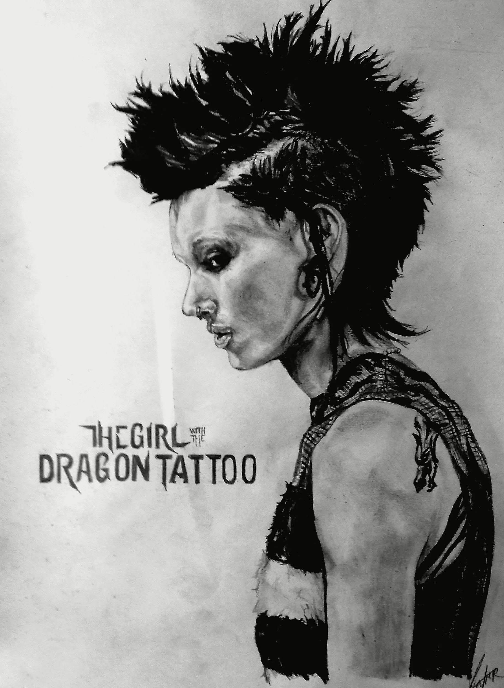

About
The Girl with the Dragon Tattoo (Swedish: Maen som hatar kvinnor - Men who hate women)
is a 2009 Swedish drama thriller film based on the novel of the same name by Swedish author/journalist Stieg Larsson.
It is the first book in the trilogy known as the Millennium series, published in Sweden in 2005.
By August 2009, it had been sold to 25 countries outside Scandinavia and had been seen by more than 6 million people in the countries where it was already released.
Directed by Niels Arden Oplev, the film stars Michael Nyqvist and Noomi Rapace.
Released:
27 February 2009Director:
Niels Arden OplevActors:
- Noomi Rapace
- Michael Nyqvist
Related films: